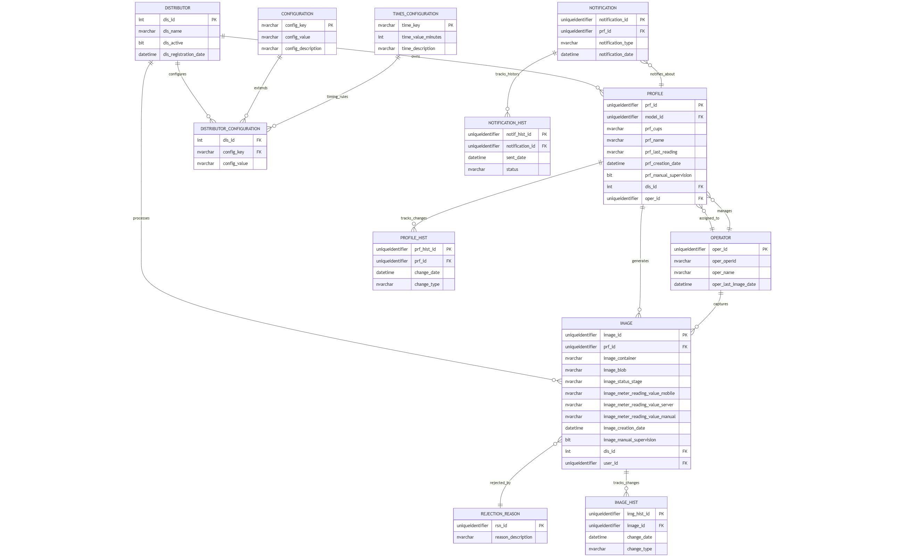

Propósito: Almacena las imágenes de contadores y su información de procesamiento a través de todas las etapas.
Campos Clave:
image_id (GUID): Identificador único de la imagen
prf_id (GUID): Referencia al perfil del contador
image_container, image_blob: Ubicación de la imagen en Azure Blob Storage
image_status_stage: Estado actual del procesamiento
image_meter_reading_value_*: Valores de lectura en cada etapa
image_meter_reading_confidence_*: Niveles de confianza OCR
image_manual_supervision: Indica si requiere supervisión de administrador
dis_id: Identificador del distribuidor (multi-tenancy)
Estados de Procesamiento:
PENDING_MANUAL_PROCESSING: Pendiente de validación manual
PROCESSED_OK: Procesado correctamente
PROCESSED_NOK: Procesado con errores
SENT_TO_SGC: Enviado al sistema comercial
Propósito: Configuración y metadatos de cada contador de gas en el sistema.
Campos Clave:
prf_id (GUID): Identificador único del perfil
prf_cups: Código CUPS del punto de suministro
prf_name: Nombre descriptivo del perfil
model_id: Referencia al modelo OCR asociado
prf_last_reading: Última lectura válida
prf_meter_serial_value: Número de serie del contador
prf_manual_supervision: Requiere supervisión manual
prf_allow_notifications: Configuración de notificaciones
dis_id: Distribuidor propietario
Propósito: Gestión multi-tenant del sistema para diferentes empresas distribuidoras.
Campos Clave:
dis_id (INT): Identificador único del distribuidor
dis_name: Nombre de la empresa distribuidora
dis_active: Estado activo/inactivo
dis_registration_date: Fecha de registro en el sistema
Propósito: Información de los técnicos que capturan las imágenes con dispositivos móviles.
Campos Clave:
oper_id (GUID): Identificador único del operador
oper_operId: Código de identificación del operador
oper_name: Nombre del operador
oper_last_image_date: Fecha de la última imagen capturada
Parámetros de configuración del sistema a nivel global.
Configuraciones específicas para cada distribuidor.
Parámetros de tiempo para procesamiento y notificaciones.
Catálogo de motivos por los cuales una lectura puede ser rechazada.
Sistema de notificaciones para operadores y administradores.
Registro de eventos y cambios en el sistema para trazabilidad.
Registro histórico de cambios en las imágenes procesadas.
Registro histórico de cambios en los perfiles de contadores.
Registro histórico de notificaciones enviadas.